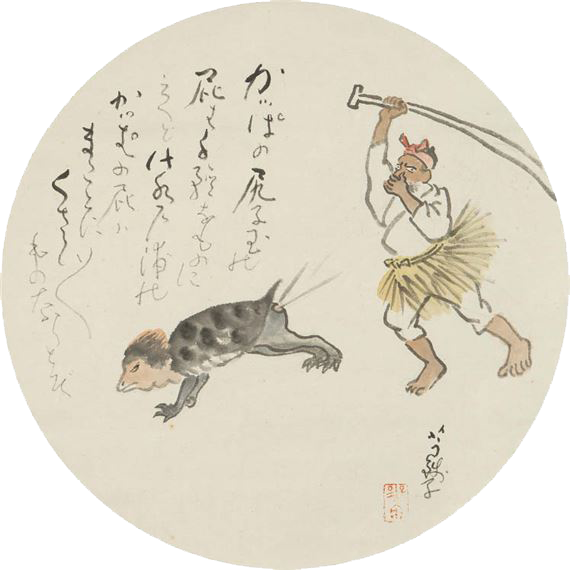

300-1929
1927-1950
1950-1970
1970-now
The Kappa was...
“mangaka Shimizu [Kon's comic] Kappa [tengoku's] portrayal of a
salaryman-style
kappa had wide impact 'in planting a new image of kappa in the minds of the people'"
"...an inversion of the kappa belief: the sexually threatening but physically repulsive male of folklore has been transformed into the
sexually alluring
and
physically attractive
female of folklorism."
"
Crude
and
cheap
kappa amulets and caricatures of many kinds can be found everywhere"
